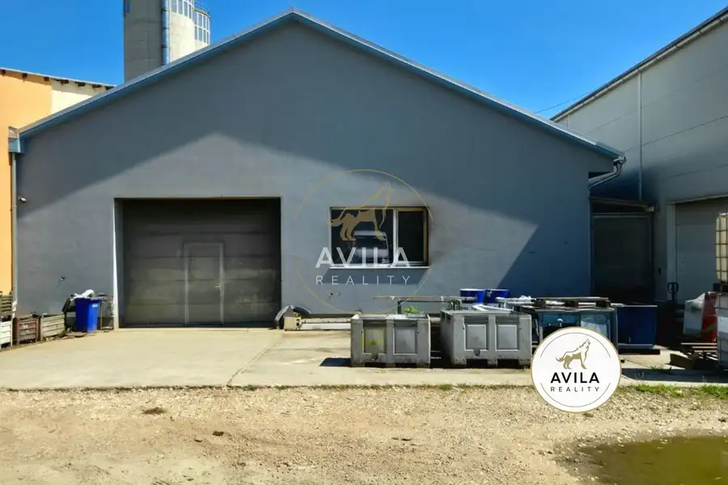
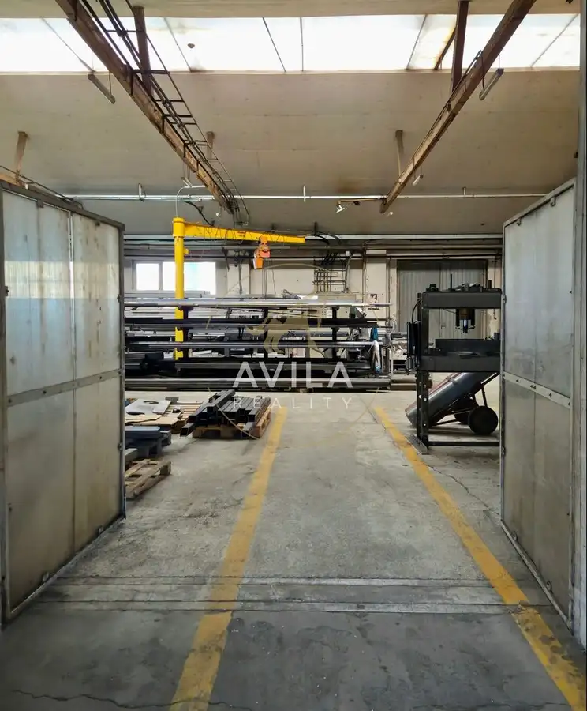
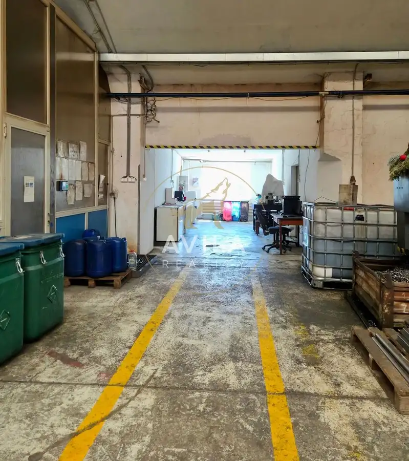
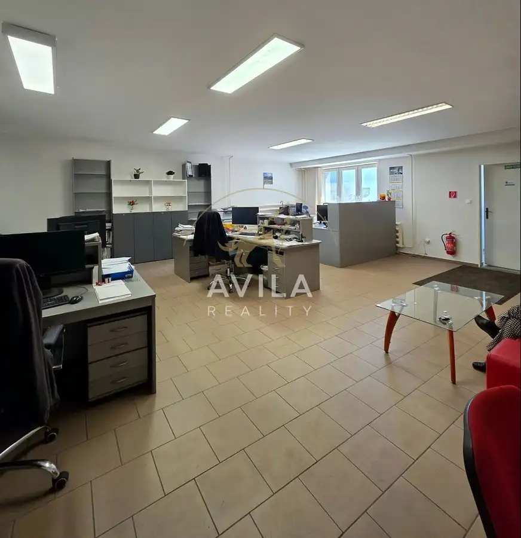
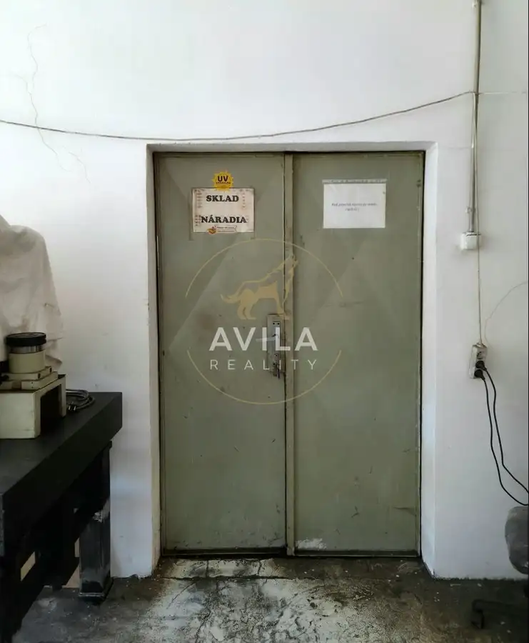
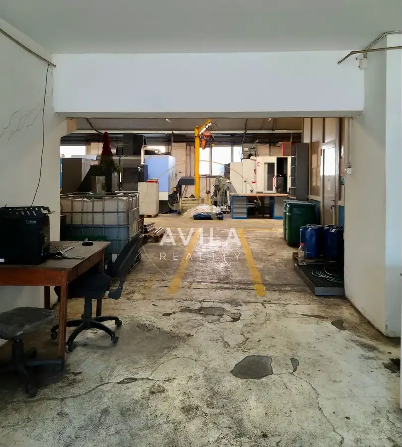
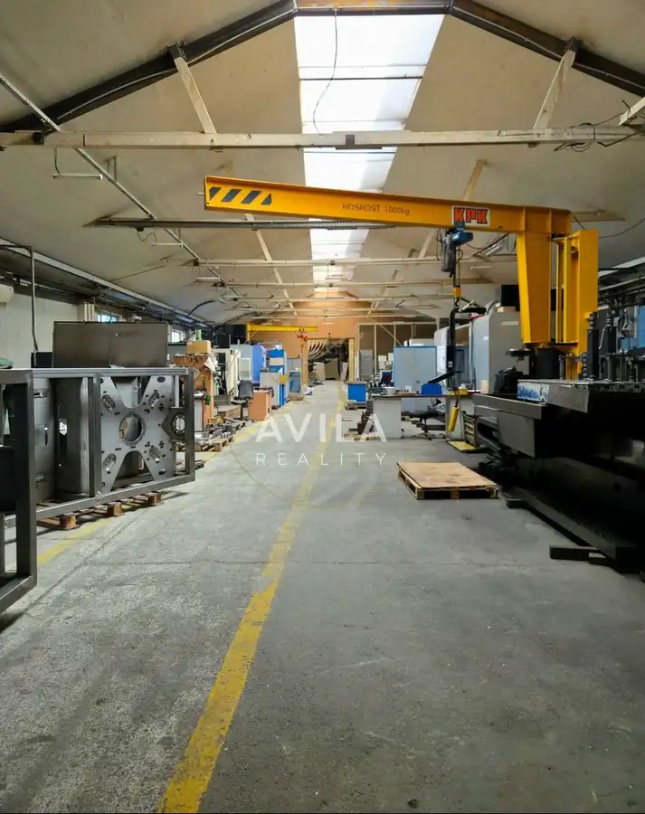
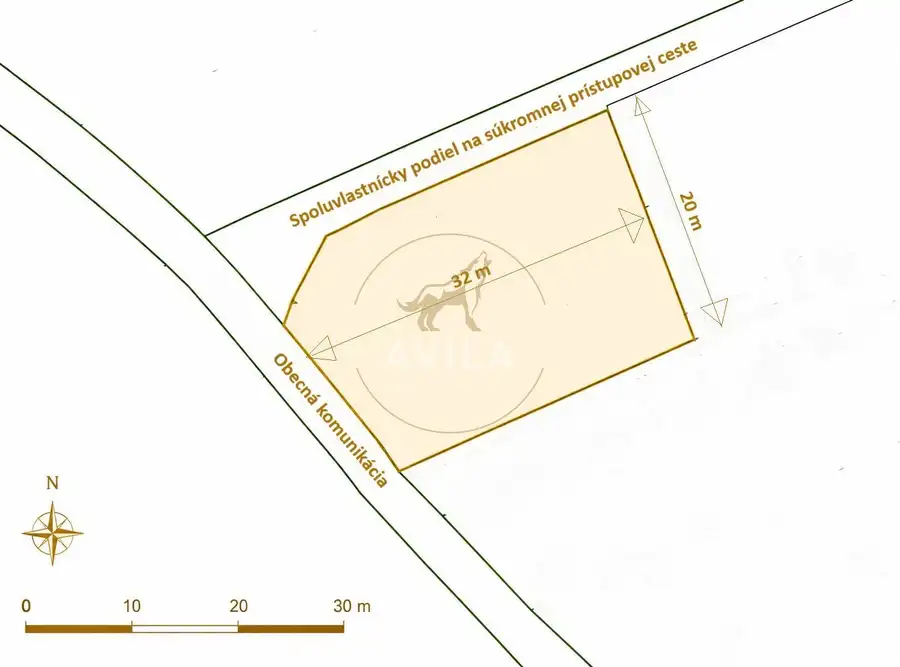
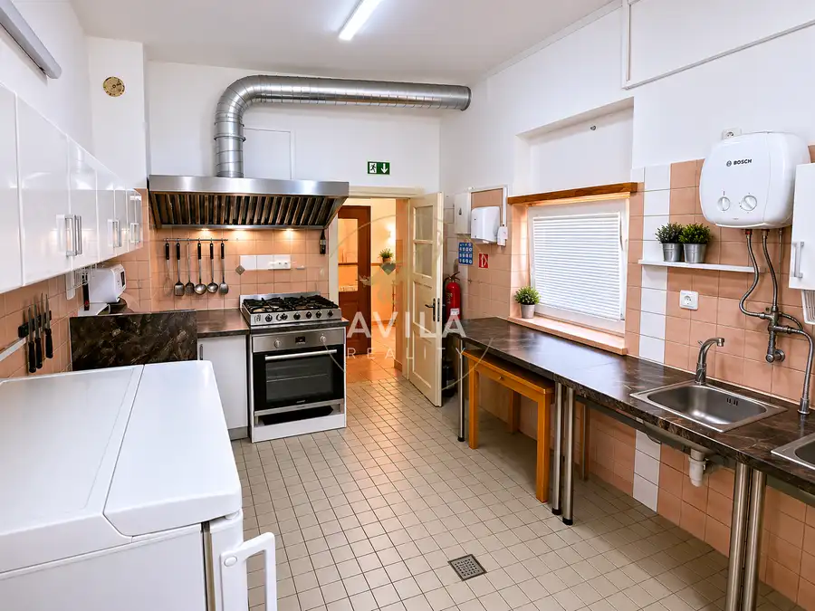
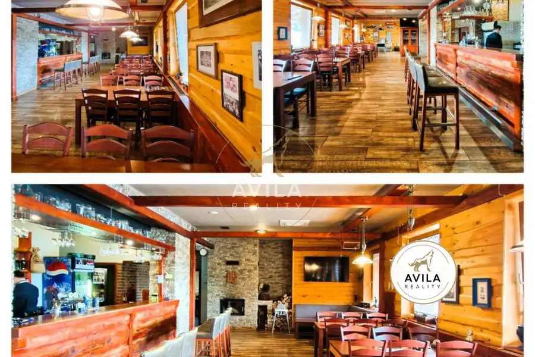

AVILA - výrobná hala 1764m2 | Nové Mesto nad Váhom
Nové Mesto nad Váhom







- Plocha1764 m²
- StavČiastočná rekonštrukcia
- VlastníctvoOsobné
O nehnuteľnosti
Sme AVILA. Spájame ľudí s priestormi, kde ich biznis rastie. Kontaktujte nás.Trenčiansky kraj, Nové Mesto nad Váhom, Trenčianska ul.Úžitková (podlahová) plocha: 1 764 m²výrobná hala: 1 283 m²kotolňa a sklad: 54 m²sklad: 15 m²lakovňa: 70 m²administratívne priestory 1: 165 m²administratívne priestory 2: 67 m²sociálne zázemie a šatne: 110 m²Výmera pozemku: 2 526 m²Technické parametre a vybavenie Príjazd pre kamióny/TIR Kompletné inžinierske siete (elektrina, voda, kanalizácia, plyn) Vykurovanie: kotolňa na pelety 30 parkovacích miest Kamerový systém, alarm, PCOLokalita a dopravná dostupnosťHala sa nachádza priamo na Trenčianskej ulici v priemyselnej časti Nového Mesta nad Váhom, len 3km od exitu z diaľnice D1 (Exit Nové Mesto nad Váhom).Rýchly prístup na D1 – čo umožňuje plynulú distribúciu tovaru smerom na Bratislavu (~100 km) a Žilinu (~100 km) Strategická poloha – mesto leží v strede západného Slovenska, s dobrým napojením na regionálnu aj diaľničnú sieť.Okolie – v blízkosti kompletná občianska vybavenosť (reštaurácie, čerpacie stanice, logistické služby) a dostatok pracovnej sily v regióne.Cena nájmu: 5 000,00 EUR/mesiac + DPH Energetické náklady: samostatne merané a fakturované podľa skutočnej spotrebyDepozit: 10 000,00 EUR + DPH (2 × mesačný nájom)Kontakt:Erik VicenaTel.: +421 949 630 001E-mail: erik.vicena@avilareality.sk________________________________________Čo všetko je zahrnuté v našej provízii•kompletný právny servis (rezervačná, budúca kúpna, kúpna, nájomná zmluva)•overenie podpisov u notára a kataster•zabezpečenie znaleckého posudku•bezpečný prevod peňazí (notárska / vinkulačná úschova)•pomoc s hypotekárnym financovaním•profesionálna prezentácia nehnuteľnosti•osobný servis makléra od prvej obhliadky po odovzdanie kľúčov________________________________________Kto smeAVILA je členom SORA – Slovenskej asociácie realitných kancelárií.Dodržiavame etický kódex, pravidelne sa vzdelávame a garantujeme férový a bezpečný priebeh každého obchodu.________________________________________Sme AVILA. Zavolajte nám a dohodnite si obhliadku – možno už zajtra budete bližšie k svojmu novému domovu.
Parametre
- Druh
- Priestor pre výrobu
- Dátum zverejnenia
- 11. 05. 2025
- Energetický certifikát budovy
- nie je
- Rok výstavby
- 1989
- Stav nehnuteľnosti
- Čiastočná rekonštrukcia
- Typ
- Prenájom
- Typ konštrukcie
- Železobetónová
- Vlastníctvo
- Osobné
- Úžitková plocha
- 1764 m²
Kde to je


Mohlo by Vás zaujímať

PozemokNové 39 900 €AVILA - Pozemok 615 m² na RD | Lubina Lubina 615 m²
Komerčné priestoryNové 129 900 €AVILA - Zabehnutý hostinec v centre obce Bzince pod Javorinou Bzince pod Javorinou 112 m²
Komerčné priestoryNové Cena na vyžádáníReštaurácia pripravená na okamžité podnikanie – Horná Streda Horná Streda 751 m²